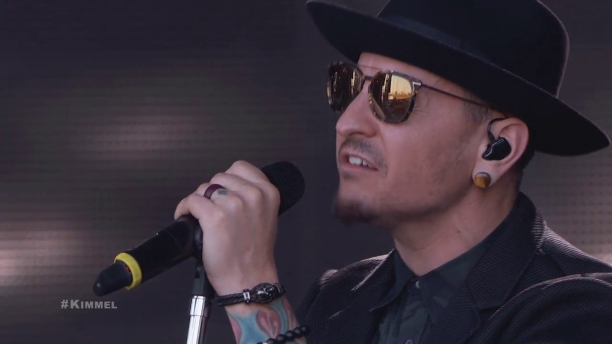
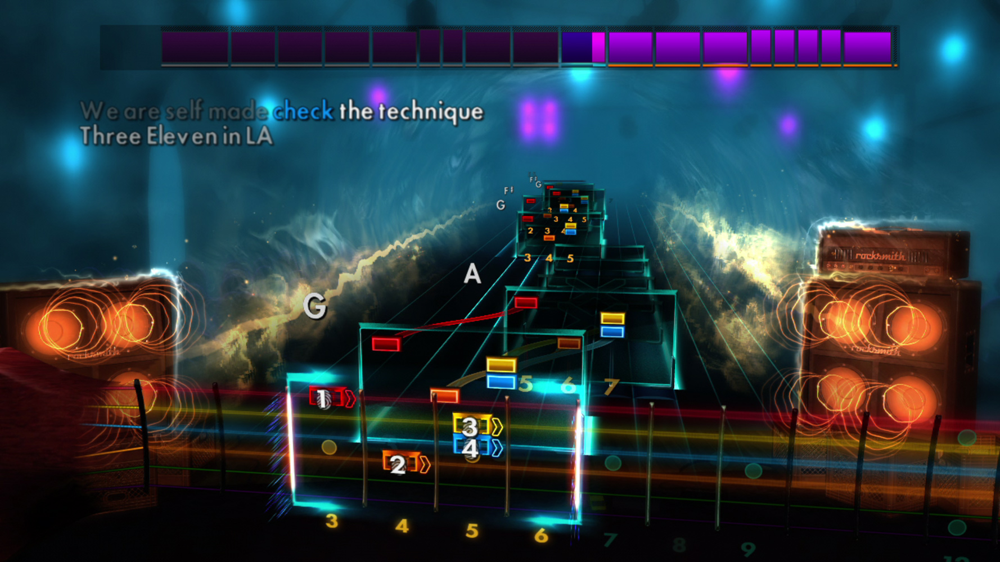

DOOM (2017) Soundtrack bevat satanische eastereggs
De soundtrack van de DOOM reboot blijkt satanische beelden zoals een pentagram, en het nummer "666" te bevatten. De man achter de eastereggs: Mick Gordon, gaf aan dat hij ze er voor fun in had geplaatst, en dat hij wel had verwacht dat het langer zou duren, (het duurde grofweg een week, en het vergte een vrij specifieke manier van werken, incluis het gebruik van professionele apparatuur). Beschuldigingen van satanisme ontkent hij, en geeft aan "het is maar een spelletje" De DOOM Reboot ligt nu in de winkels. Homepageorigineel artikel
 Chester Bennington overleden
De lead-zanger van de populaire Nu-Metal band Linkin park is overleden. Gisteren werd Chester Bennington dood gevonden in zijn huis. Er wordt van een zelfmoord uitgegaan gezien het feit dat er meerdere pillen in de buurt van zijn lichaam zijn gevonden. mede-bandlid Mike Shinoda geeft aan "geschokt" te zijn en vraagt om respect voor de familie van bennington en spreekt zijn waardering uit voor de response van fans. Chester Bennington was 41 jaar oud. Homepage origineel artikel

Grant Kirkhope's muziek in Mario rabbids was zelfs voor hem een verassing
Fan van de muziek in mario vs rabbids? Recentelijk is bekend geworden dat een van de composers; Grant Kirkhope, bekend van onder meer Banjo-Kazooie en de Civilization series, er pas na het uitkomen van mario vs rabbids achterkwam dat de muziek die hij had geschreven ervoor was bestemd. Hij geeft zelf aan dat hij "vereerd" is om in dezelfde series als legende Koji Kondo (de zelda series) te staan, en hoopt dat hij misschien ooit een hand kan hebben in die serie.Homepage origineel artikel
 IOS versie voor Rocksmith bekend gemaakt
Tijdens Ubisoft's laatste kwartaalreport werd bekend dat de populaire gitaarsimulator Rocksmith 2014 naar ios komt. Volgens de makers zal de versie "erg veel op het origineel lijken" en voor het grootste deel hetzelfde zijn, minus een graphische downgrade. Fans zijn voornamelijk bezorgd over het framerate, aangezien het type spel wat rocksmith is, hevig zou kunnen lijden onder een laag framerate.Homepage origineel artikel